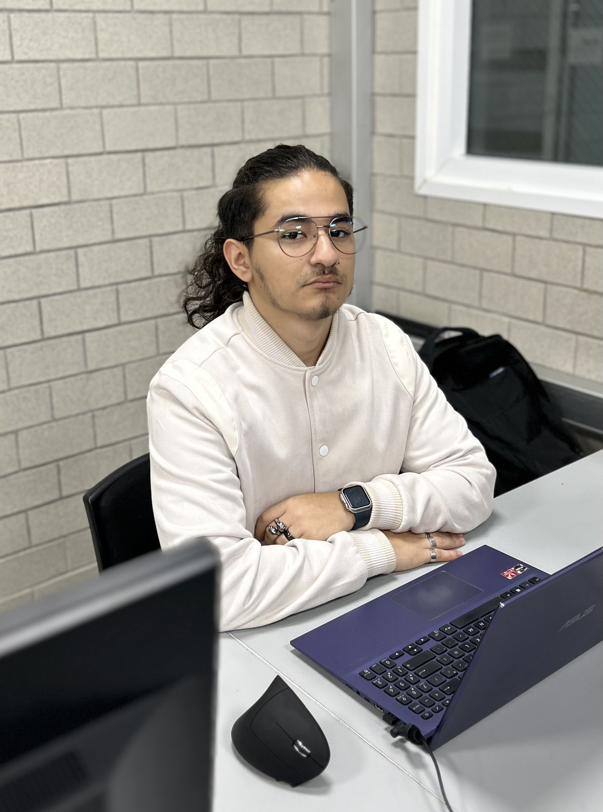

Bibliografías

Daniela M Jiménez A. Estudiante de ingeniería en sistemas computacionales de octavo semestre en la
Universidad del Valle de México, su área de interés es Telecomunicaciones y actualmente está ejerciendo
en la empresa aseguradora MetLife como DataAnalyst.
Brian A Viana C. Estudiante de ingeniería en sistemas computacionales de octavo semestre en la Universidad
del Valle de México, su área de interés es el desarrollo Android ya que le gusta programar en lenguaje Kotlin
y actualmente está ejerciendo en QuarkSoft como desarrollador Android.

Nadia S Peña U. Estudiante de ingeniería en sistemas computacionales de octavo semestre en la Universidad
del Valle de México, su área de interés es el Desarrollo de aplicaciones móviles y actualmente está ejerciendo
en la empresa Informática Aplicada Consulting Group como desarrolladora.

Salvador de J Pérez M. Estudiante de ingeniería en sistemas computacionales de octavo semestre en la Universidad
del Valle de México, su área de interés es Redes y actualmente está ejerciendo en la Secretaria de Marina Armada
de México en el área de TI Infraestructura.